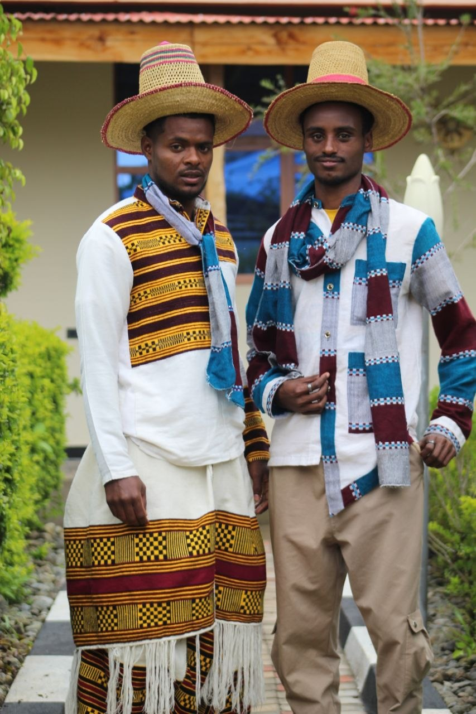
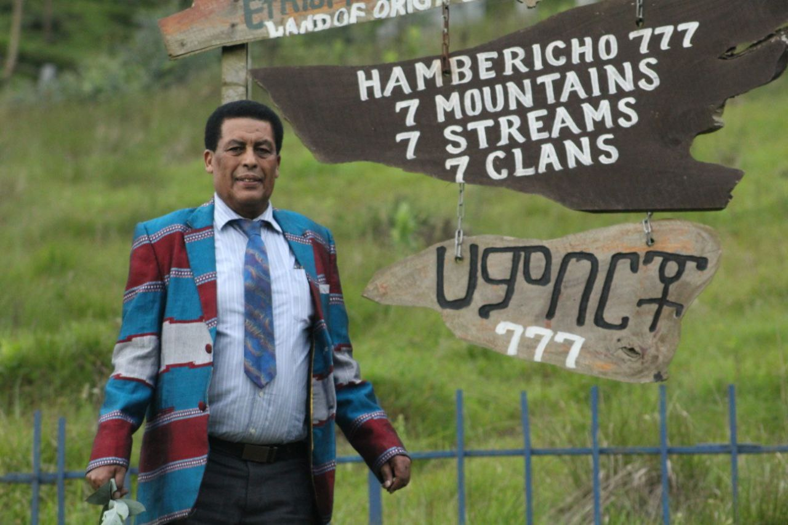
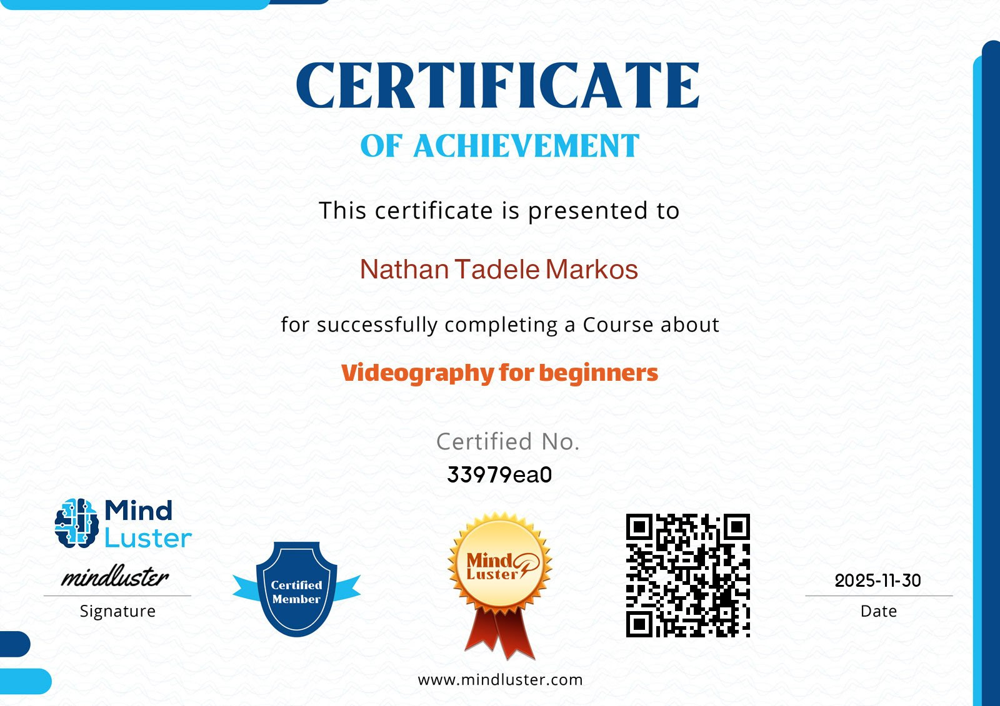
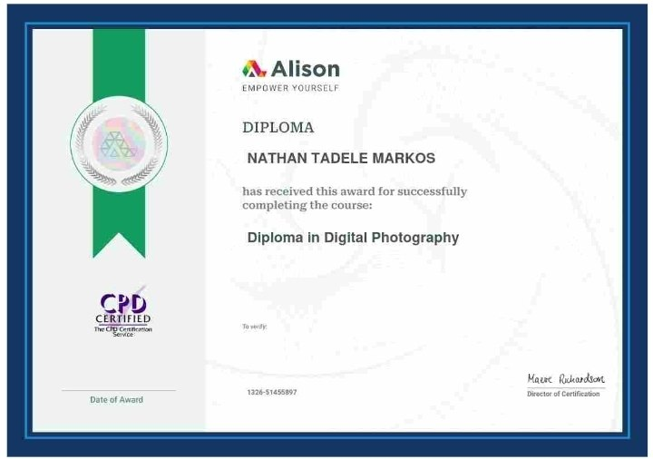
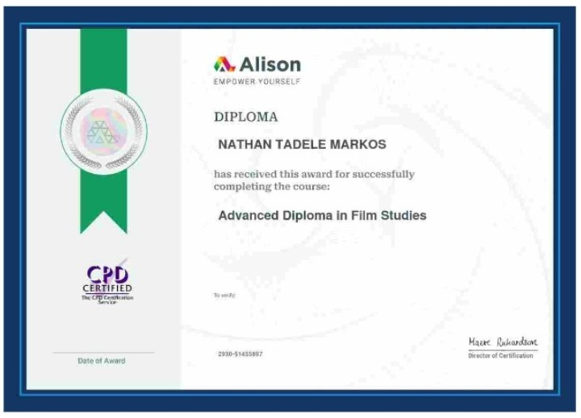

Portrait Series
Creative portrait photography showcasing emotion and character.

Urban Landscapes
Cityscape photography capturing the essence of urban environments.

Certificate of vedio graphy
Mind Luster

Cultural Documentary
Documentary showcasing traditional Ethiopian cultural practices.

Diploma in Digital Photography
Alison Online - Completed in 2025

Advanced Diploma in Film Studies
Alison Online - Completed in 2025